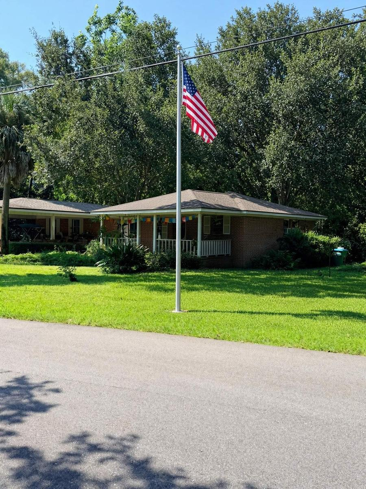
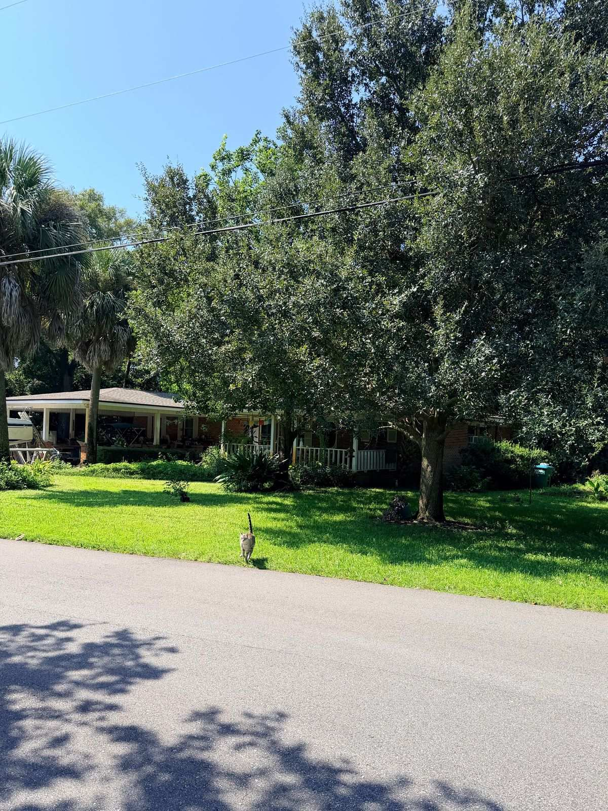
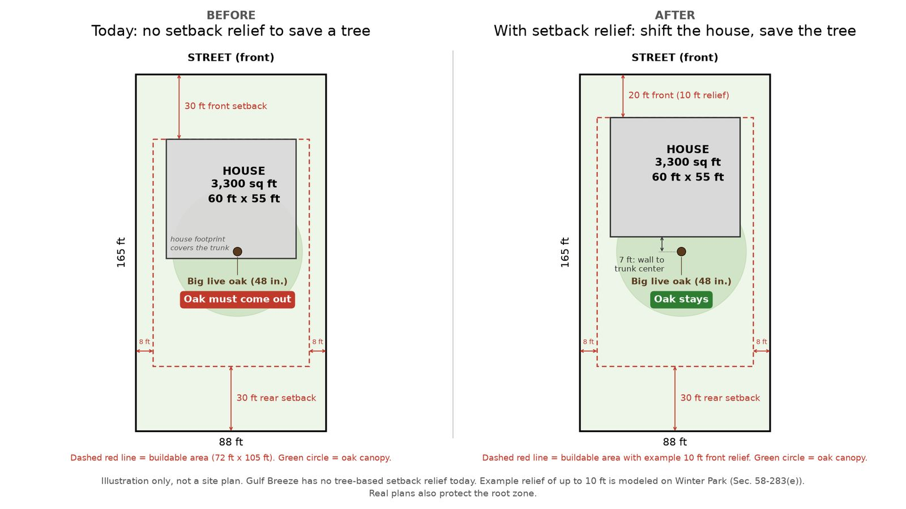

Trees for the Breeze
Our big trees took generations to grow. I want rules that are honest, fair to homeowners, and actually work.
Gulf Breeze has been a Tree City USA for 33 years. I’m proud of that. But when I read our tree code line by line, I found some gaps. Here is what I found, what I would do, and what I can’t promise.


What the rules say today
- Protected trees. Trees 12 inches and up need a permit to remove. The permit is free.
- The fine. $250 for a first violation, $500 after that (Sec. 22-197).
- Heritage trees (48 inches and up). Same $250 / $500 fine. Sec. 22-170 says removal must be mitigated “as set forth below.” Nothing is written below.
- Tree mitigation money. Gulf Breeze’s tree code does not set up a separate tree fund. But the city does collect tree mitigation money: about $20,400 by June 2026, with $24,000 projected for FY2026 (Oct 2025 to Sep 2026). That money goes into the Streets & Stormwater Utility Fund (account 201-0000-343.70-05). Only $500 a year is budgeted for tree mitigation expenses. I want that money set aside and spent on replanting, with a public report of what comes in and what goes out.
- What we don’t have. No canopy goal. No setback break to save a big tree. No code enforcement board or special magistrate since 2002.
Sources: City of Gulf Breeze FY2027 budget workshop packet, Jul 20, 2026, pp. 227–230 (revenue line 201-0000-343.70-05; expense line 201-0531-552.52-04); Ord. 03-2022 (tree protection, adopted Aug 15, 2022).
What state law says
- Dangerous trees. Since 2019 (tightened in 2022), the owner of a single-family home can remove a tree with a signed, onsite risk assessment, done the ISA way, that finds it an unacceptable risk. No city permit needed. That is legal, and I respect it.
- The freeze. A 2025 state law (SB 180) likely bars the city from proposing or adopting stricter land-use rules until Oct 1, 2027, because of the recent storm declarations. That is my reading, not legal advice. The City Attorney should confirm.
What I would do
- Setback relief to save a big tree. Let a builder shift a house a few feet instead of cutting a big oak. Winter Park allows up to 10 feet. Coral Gables allows up to 20%. This loosens rules, so we likely can do it now.
- Enforcement with teeth. A special magistrate. State law lets one fine up to $250 a day, $500 a day for repeats, and up to $5,000 for damage that can’t be undone. Whether this fits under the freeze is a question for the City Attorney.
- Tree money for trees, and voluntary programs. Set tree mitigation money aside for replanting, with public reporting. Use public-tree programs and state forestry grants, and let owners volunteer their big trees as heritage trees. Fernandina Beach lets owners register native trees 36 inches and up, and its tree fund helps pay for pruning and covers checkups.
- Fix the heritage gap. Write the missing heritage mitigation formula once the freeze lifts.

What this means for you as a homeowner
- Need to remove a protected tree? Ask the city for a permit. It’s free.
- Think a tree is dangerous? Get a signed, onsite ISA-method risk assessment before you cut.
- Check the signer’s credential: an ISA-certified arborist or a Florida-licensed landscape architect.
Honesty, Integrity, and Transparency. I am Jeffrey Bowman, for Gulf Breeze City Council Seat D. Questions about a tree? Ask me.